02 / BRAND IDENTITY · ENVIRONMENTAL DESIGN
Museum of
Technology
01 / Overview
A visual identity for a cultural institution dedicated to the past, present, and future of technology. The system turns modular geometry into a bold, accessible museum experience.
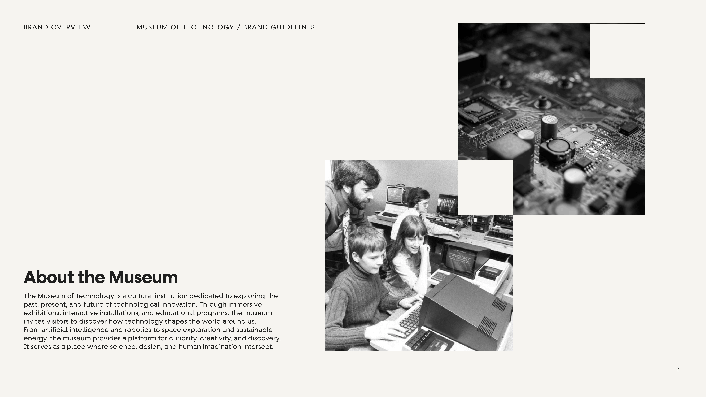
02 / Brand Foundation
The final mark grows from a grid of structural forms. Orange signals energy and invention while black and warm white ground the system with clarity.
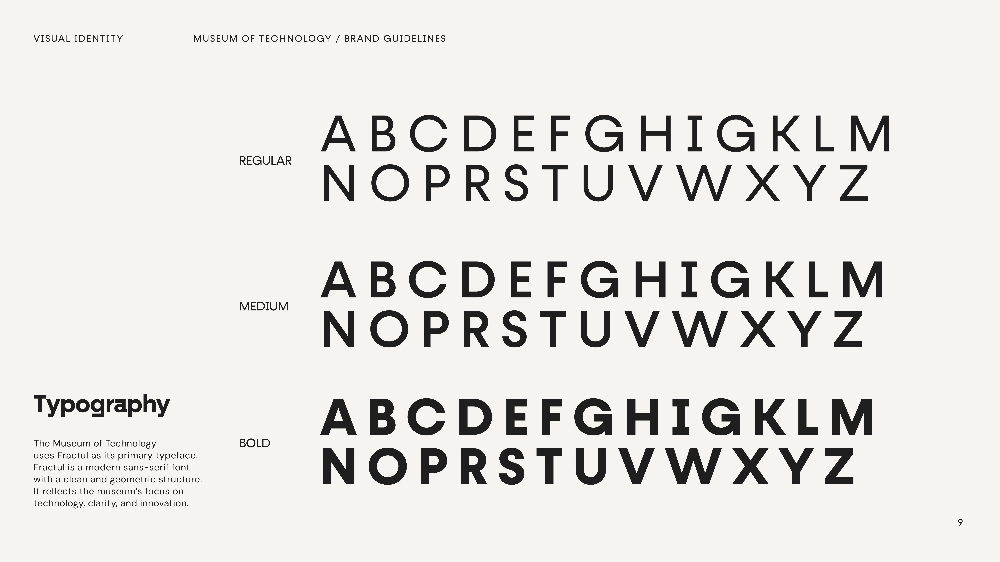
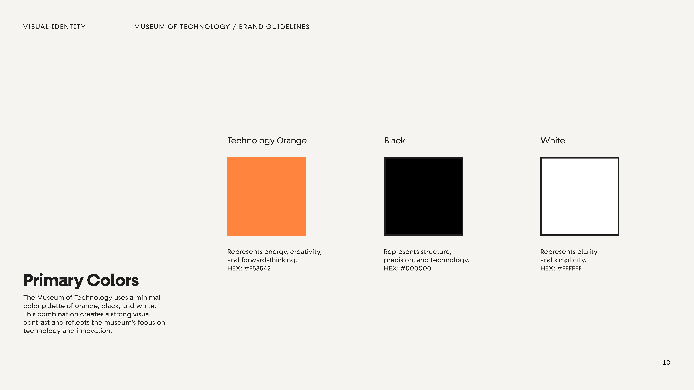
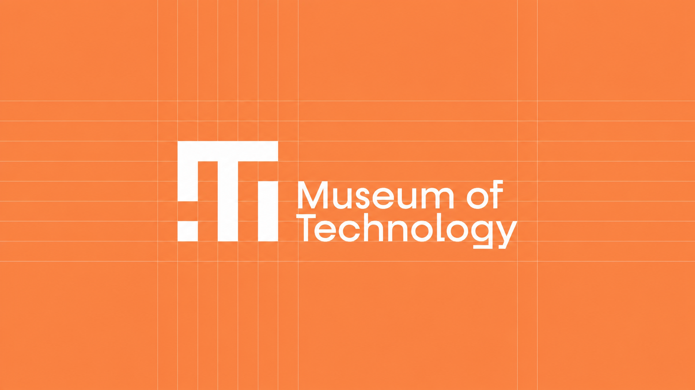
03 / Wayfinding
Pixel-like symbols extend the logo into a flexible wayfinding family. Direction, amenities, and floor hierarchy remain recognizable at architectural scale.
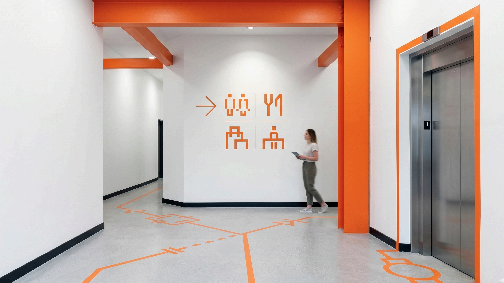
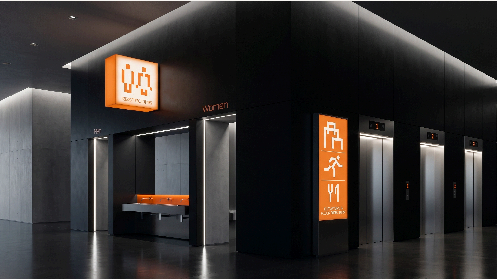
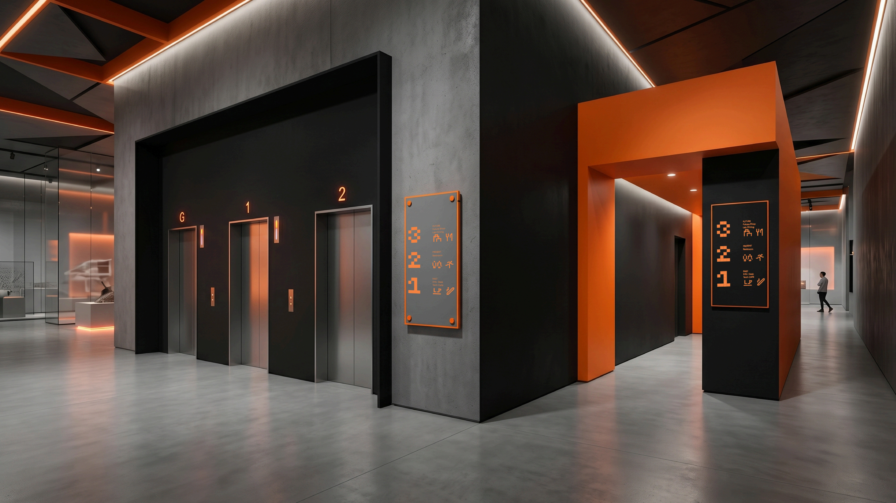
04 / Spatial Identity
Orange and black organize the environment as both atmosphere and information—guiding visitors through galleries, shared spaces, and moments of discovery.
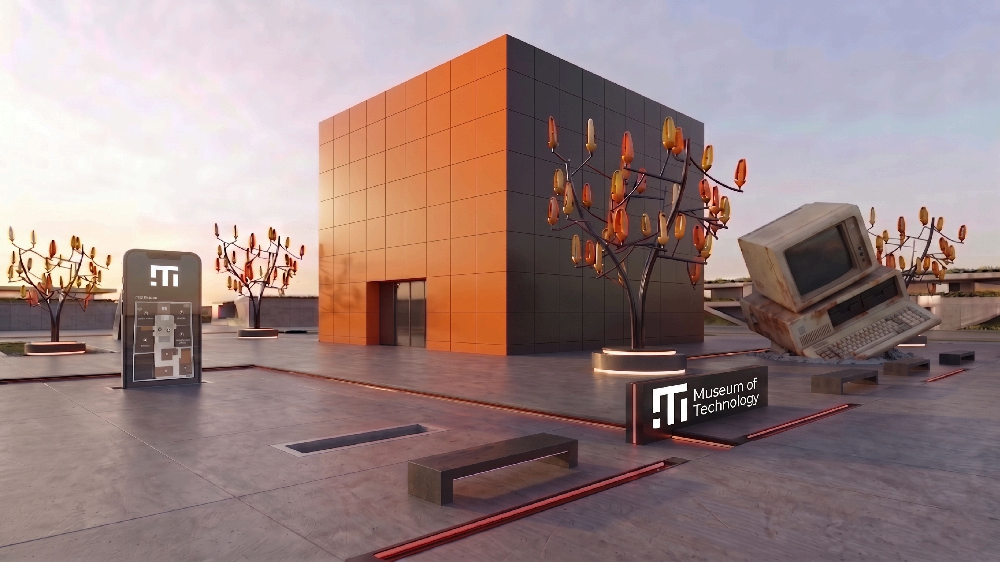
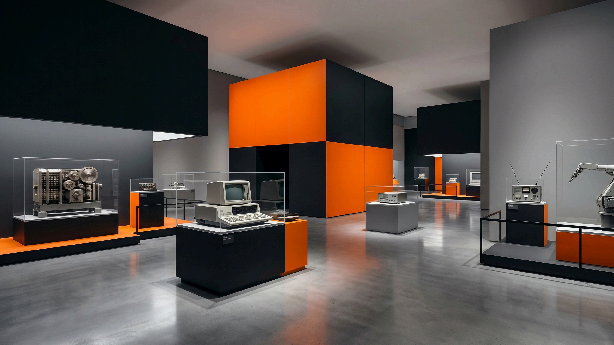
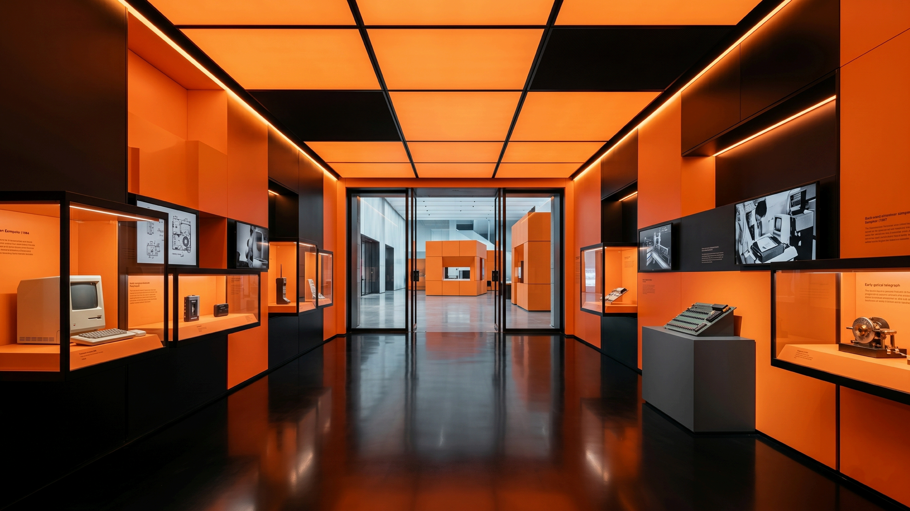
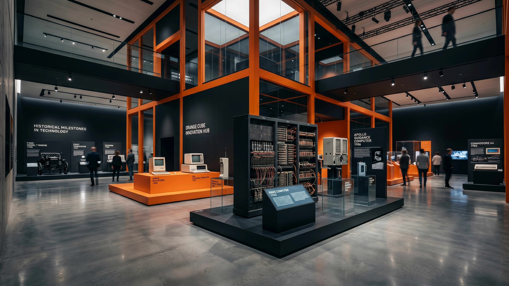
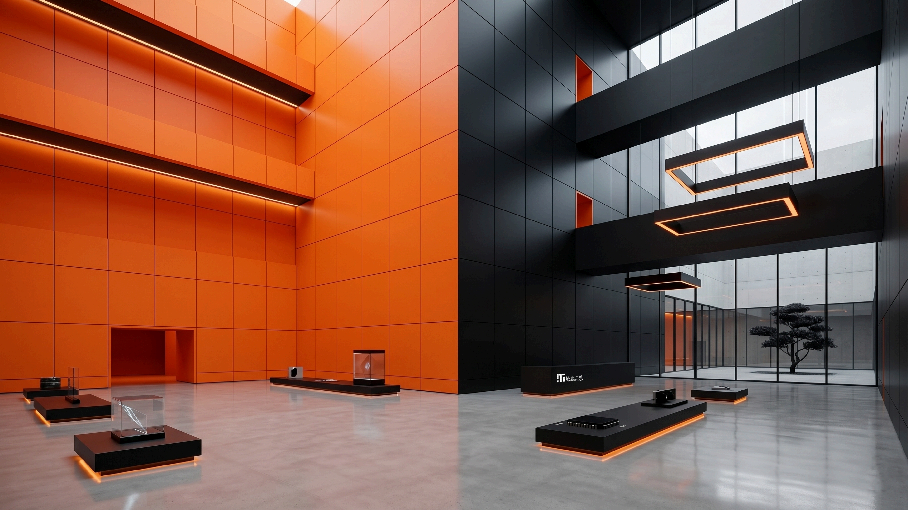
05 / Applications & Website
From print collateral to a digital front door, the identity stays direct and consistent while adapting to very different visitor touchpoints.
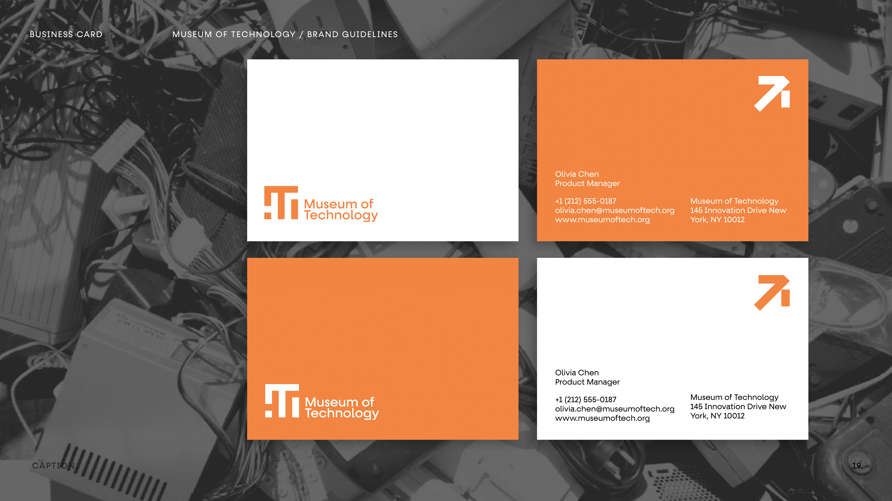
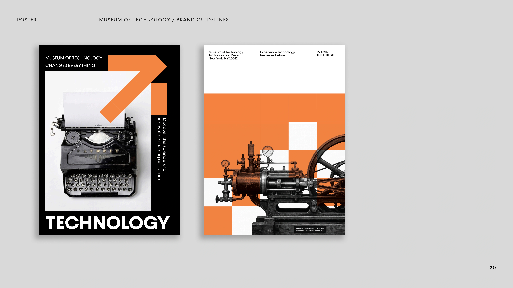
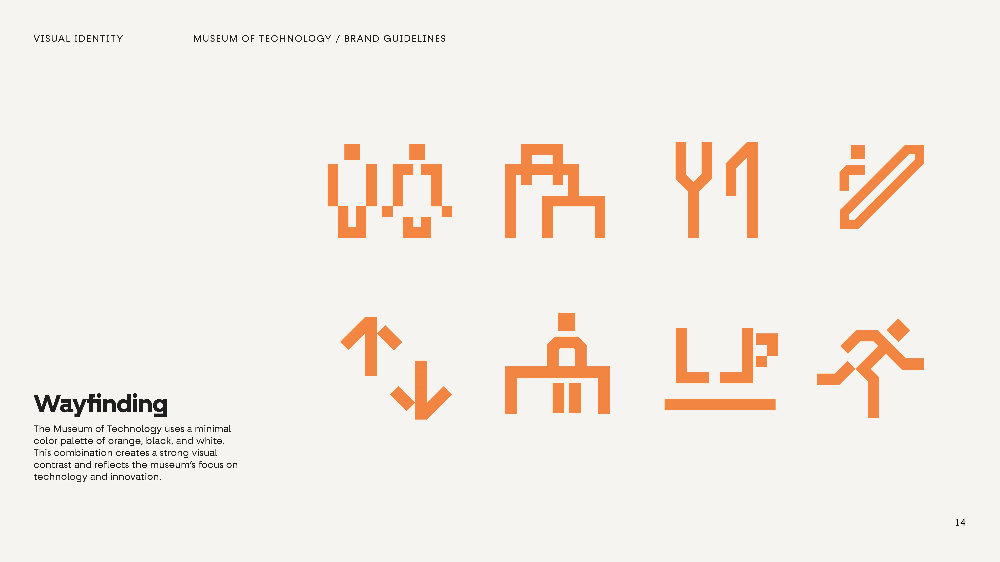
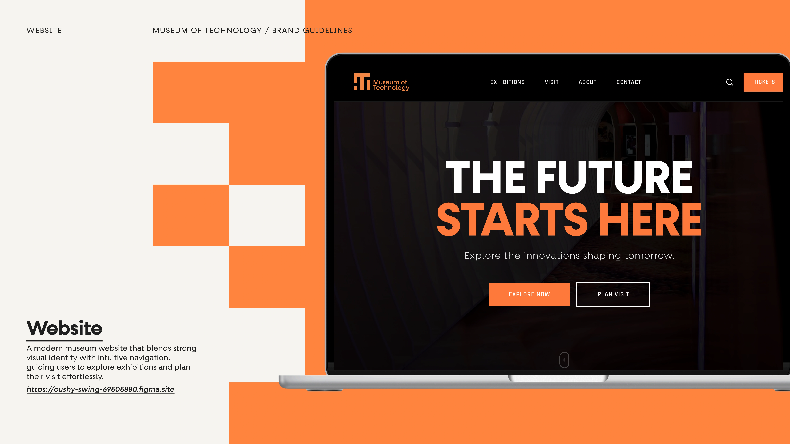